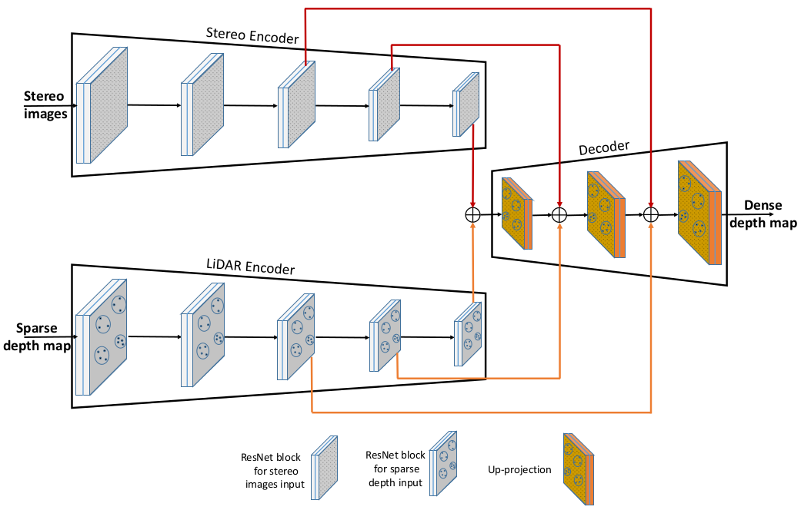
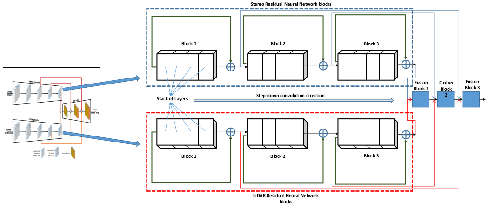

Salmane et al. (2023)
2 Analysis of the Role of Each Sensor in the 3D Object Detection Task
SLS–Fusion is a fusion method for LiDAR and stereo cameras based on a deep neural network for the detection of 3D objects, is shown in the below picture Figure 1.
- Firstly, an encoder–decoder based on a ResNet network is designed to extract and fuse left/right features from stereo camera images and project the LiDAR depth map.
- Secondly, the decoder network constructs a left and right depth map of optimized features through a depth cost volume model to predict the corrected depth
- After the expected dense depth map is obtained, a pseudo-point cloud is generated using calibrated cameras.
- Finally, a LiDAR-based method for detecting 3D objects PointRCNN (Shi, Wang, and Li 2019) is applied to the predicted pseudo-point cloud.
3 Characteristics of the Neural Network Architecture Used
The main component of the SLS–Fusion neural network, used to fuse or separate LiDAR and stereo camera features (for an ablation study), is the encoder–decoder component (see Figure 1 and Figure 2)
Figure 2: SLS–Fusion encoder–decoder architecture: The residual neural network blocks (ResNet blocks) within the encoder are used to extract features from the LiDAR and stereo inputs. The fusion process inside the decoder is accomplished through the use of addition and up-projection operators As shown in Figure 2, both the stereo camera and LiDAR encoders are composed of a series of residual blocks from the neural network ResNet, followed by step-down convolution to reduce the feature resolution of the input. ResNet is a group of residual neural network blocks and each residual block is a stack of layers placed in such a way that the output of one layer is taken and added to another deeper layer within the block, as shown in Figure 3
Figure 3: The structure of Stereo and LiDAR residual blocks inside the encoder/decoder of the SLS– Fusion model. A stack of layers is grouped into blocks for stereo and LiDAR networks, conducted by a step-down convolution direction and followed by a set of fusion blocks The main advantage of ResNet is its ability to prevent the accuracy from saturating and degrading rapidly during the training of deeper neural networks (networks with more than 20 layers). This advantage helps in choosing a network to be as deep as needed for the problem at hand.
The network of the decoder consists of adding the functions of both LiDAR and stereo encoders, then up-projecting the result to progressively increase the resolution of the features and generate a dense depth map as a decoder output.
Because the sparse input of LiDAR is heavily linked to the depth decoder output, features related to the LiDAR sensor should contribute more to the decoder than features related to the stereo sensor.